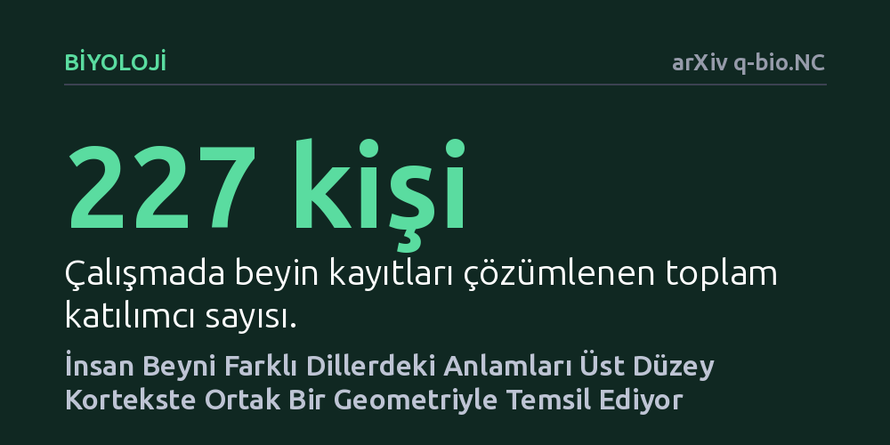

BIYOLOJI · arXiv q-bio.NC · 2026-10-22
Araştırmacılar, Çince, İngilizce ve Fransızca konuşan 227 kişinin beyin kayıtlarını inceleyerek farklı dillerdeki anlamların ortak nöral temelini araştırdı. Çalışma, beynin üst düzey birleştirme bölgelerine doğru gidildikçe farklı dillerin ortak bir kortikal anlam geometrisini paylaştığını ortaya koydu.
Kullandığımız dil sözcük ve dil bilgisi açısından ne kadar farklı olursa olsun, beynimizin kavramlar arasındaki ilişkileri temel bir ortak haritaya göre düzenlediğini gösteriyor.

İnsan dilleri, kelime dağarcığı ve dil bilgisi yapıları bakımından muazzam farklılıklar sergiler. Çince karakter temelli ve tonlamalı bir yapıya sahipken, İngilizce ve Fransızca çok daha farklı gramer kuralları ve sözcük kökleri kullanır. Buna rağmen, yeryüzünün farklı köşelerinde yaşayan ve bambaşka dilleri konuşan insanlar benzer soyut fikirleri, duyguları ve nesneleri birbirlerine kolaylıkla aktarabilmektedir.
Sinirbilimciler uzun süredir bu durumun ardındaki biyolojik mekanizmayı aydınlatmaya çalışıyor. Farklı diller konuşulduğunda beynin anlamı tamamen o dile özgü ayrık nöron kümeleriyle mi işlediği, yoksa yüzeydeki dilsel biçim ne olursa olsun kavramları bir araya getiren ortak bir biyolojik mimari mi bulunduğu sorusu ortada duruyordu. Bu sorunun yanıtı, insan zihninin evrenselliğini anlamak ve dilden bağımsız beyin-bilgisayar sistemleri tasarlayabilmek açısından temel bir önem taşıyor.
Araştırma ekibi bu temel soruya yanıt bulmak amacıyla Çince, İngilizce ve Fransızca konuşan toplam 227 katılımcıya ait beyin kayıtlarını inceledi. Çalışmada, katılımcıların farklı dillerdeki içerikleri algılarken ortaya çıkan beyin aktivitelerini çözümleyebilen çok dilli bir beyin kodu çözme (brain decoding) çerçevesi geliştirildi.
Uygulanan yöntem, tek tek nöronların ya da izole bölgelerin değil, farklı kavramların beyin kabuğunda (korteks) birbirine göre nasıl konumlandığını, yani aralarındaki geometrik mesafe ve ilişkileri analiz etmeye odaklandı. Böylelikle diller arasındaki yüzeysel kelime ayrılıklarının ötesine geçilerek, beynin kavramsal alanı nasıl haritalandırdığı doğrudan ölçüldü.
Elde edilen bulgular, kortikal anlam temsillerinin diller ve bireyler arasında tutarlı geometrik ilişkiler sergilediğini ortaya koydu. Diğer bir deyişle, iki kavram arasındaki anlam yakınlığı ya da uzaklığı, Çince konuşan bir bireyin beyninde de İngilizce veya Fransızca konuşan birinin beyninde de benzer bir uzamsal örüntüyle kodlanıyor.
Çalışmanın en dikkat çekici sonucu, bu geometrik tutarlılığın beynin her bölgesinde aynı düzeyde kalmaması oldu. Diller arası anlam geometrisi tutarlılığı, birincil duyusal ve motor alanlardan üst düzey assosiasyon (birleştirme) korteksine doğru gidildikçe belirgin biçimde artış gösterdi. Bu durum, beynin temel işlevsel organizasyon ekseniyle doğrudan örtüşen ortak bir anlamsal geometri gradyanı oluşturduğunu kanıtladı.
Sonuçlar, farklı diller konuşulsa dahi insan beyninin üst düzey düşünme ve soyutlama aşamalarında ortak bir 'kavramsal geometri' kullandığını gösteriyor. Duyusal düzeyde dillerin ses ve yazı farklılıkları belirgin kalırken, beynin anlamı sentezleyen üst merkezlerine ulaşıldığında biyolojik temsil evrensel bir yapıya kavuşuyor.
Bu keşif, dilden bağımsız çalışabilen yeni nesil beyin-bilgisayar arayüzlerinin ve nöroteknolojik tercüme sistemlerinin geliştirilmesine kapı aralayabilir. Ayrıca yapay zeka dil modellerinin insan beynindeki anlam organizasyonuna ne ölçüde benzediğini nesnel biçimde değerlendirmek için de biyolojik bir kıstas sunuyor.